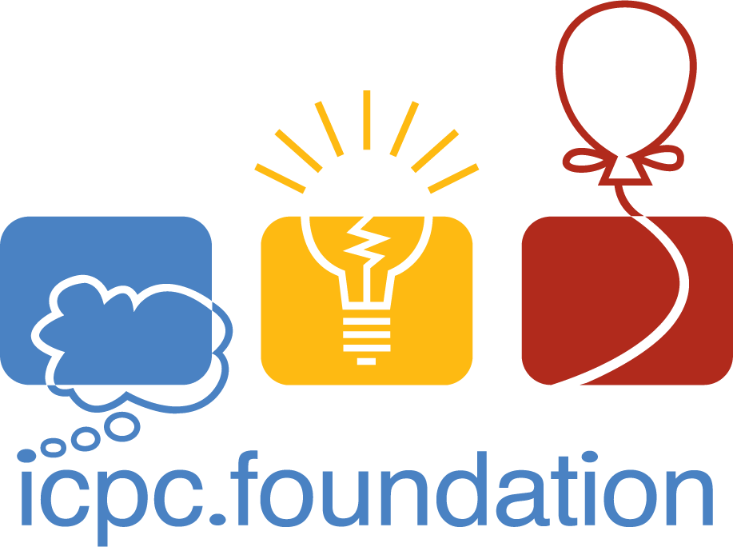
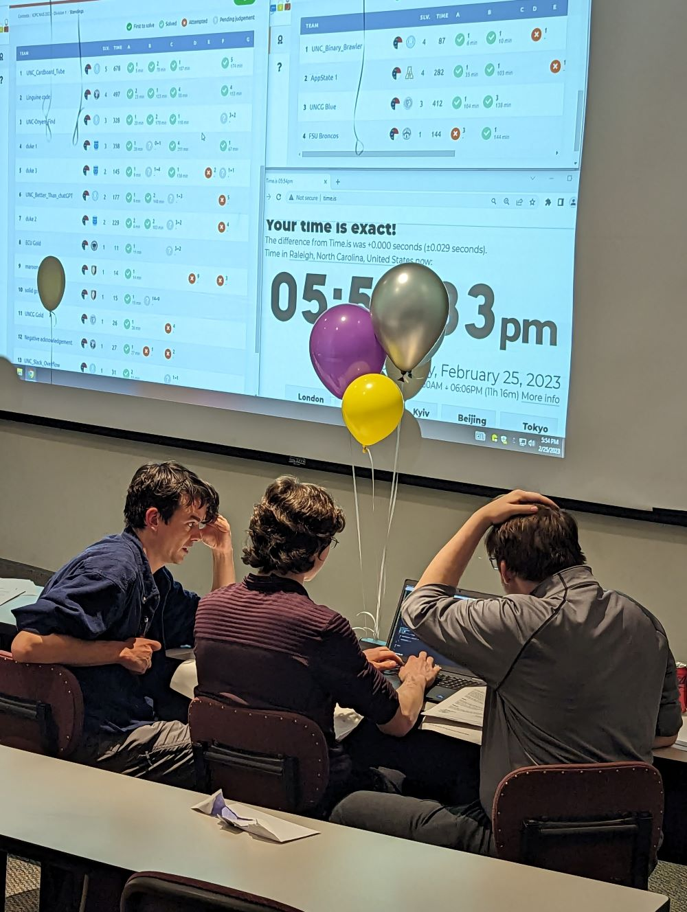
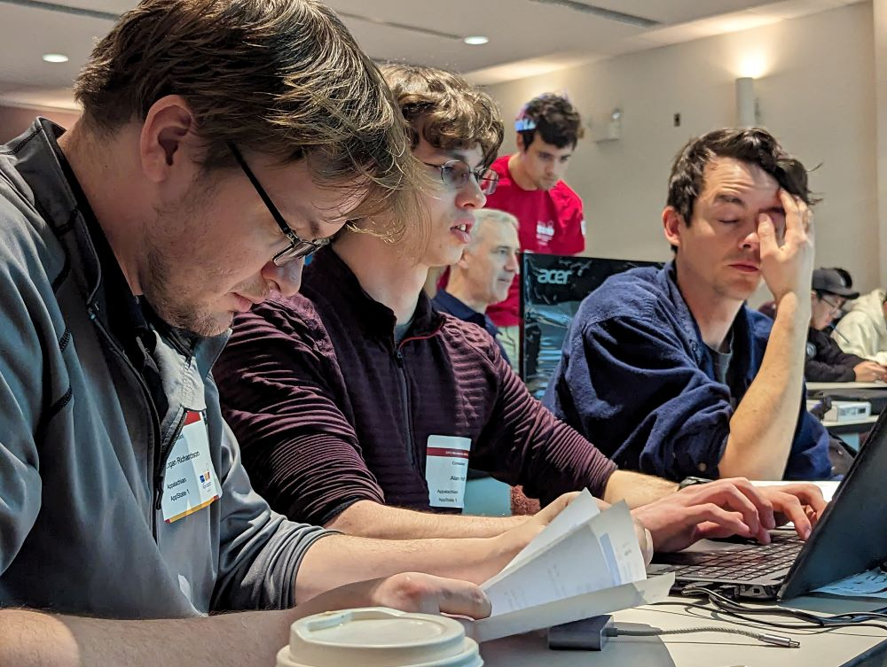

The goal of this course is to teach and refine problem solving skills through the process of studying competitive programming.
What is Competitive Programming?
"Given well-known computer science problems, solve them as quickly as possible."
We are not dealing with research problems. These are solved problems!
Produce the same answer as the problem author in a reasonable amount of time.
What is Competitive Programming?

International Collegiate Programming Contest (ICPC)
The ICPC is a team competition, with teams of three (3) students.
Contests last for five (5) hours, and consist of between 8 and 15 problems.
50,000+ students from 3,000+ schools in 100+ countries


Mid-Atlantic ICPC Regional 2023:
Logan Richardson, Alan Huff, Sam Arkle
Why Study Competitive Programming?
Practice fundamentals, improve as a programmer
Learn rapid prototyping and problem solving skills
Get to work on interesting & challenging problems
Develop technical skills that will be invaluable in interviews
Why Study Competitive Programming?
It's Fun!
Course Overview
Together we will learn
the basics of competitive programming
data structures & programming libraries
problem solving paradigms like complete search, divide and conquer, and dynamic programming
string matching algorithms
Course Overview
Together we will learn
graph algorithms such as shortest path, network flow, and matching
how to approach NP-hard/complete problems
mathematical concepts in number theory, combinatorics, and computational geometry
Course Details
Prerequisites
Programming proficiency in some language
CS 3460, Data Structures
Eagerness to understand and solve problems
Course Details
Attendance
Attendance is mandatory. If you are unable to attend for any reason, you will be expected to make up the in-class content within a week.
Students are permitted to miss two (2) class meetings without penalty. Each unexcused absence beyond that will result in a loss of one letter grade.
Meeting Format
Course meetings are three (3) hours long
Hour 1: Lecture on a topic or set of problems to introduce or reinforce a concept
Hour 2: In-class exercise, divide up into groups of 1-3 students to work on problems
Hour 3: Class meets back to go over some of the problems from the problem set
Grading & Assignments
In-Class Exercises (40%): Solve problems individually or in small teams during class
Homework Problems (20%): Reinforce skills with additional practice outside of class
Two In-Class Contests (20%): Solo contests evaluated on a variety of factors
Final Contest (20%): Solo contest evaluated based on partial credit
Grading & Assignments
Contests will be graded on a sliding scale taking into account effort and median number of problems completed by the class.
Course is not graded on an absolute scale. Letter grade distribution will be decided post-hoc based on final numeric grades.
Academic Integrity
There is little reason to cheat in this course, as most assessment is based on effort, not perfection.
You may consult online resources, but you should not be searching for specific solutions.
All submitted work is expected to be your own.
If you are determined to have plagiarized or cheated, you will receive an F for the course.
Academic Integrity
Collaboration is encouraged, but all submitted work is expected to be your own!
Do
discuss problems with other students
reinforce material by studying together
Don't
copy solutions from others
share solutions with others
submit anything you find online as your own
How to Succeed in CS 3532
Attend class and participate enthusiastically
Study and reinforce the material by repetition
Start working on problem sets early to give ample time
Attempt every problem in each problem set thoughtfully
Problem Format
Problems will contain the following
A prose description of the problem that you will solve
A prose description of how the input will be formatted and what it will contain, including any limits on values
A prose description of how the output should be formatted
An example of sample input data that you should expect to receive
Corresponding sample output for a solution given the input data above
Input/Output (The Easy Part)
Problems give input via standard input and receive output via standard output. Your programs do not need to read from files.
In Java, use Scanner(System.in) and System.out.println()
In Python 3.x, use input() and print()
In C, use scanf() and printf()
In C++, use std::cin and std::cout
Learn to use the tools available to tokenize input effectively so you can get to working on the interesting part of the problem faster!
Example Problem
Let $(x,y)$ be the integer coordinates of a student's house on a 2D plane. There are $2N$ students and we want to pair them into $N$ groups. Let $d_i$ be the distance between the houses of the two students in group $i$. Form $N$ groups such that the cost $\sum_{i=1}^N d_i$ is minimized. Output the minimum cost as a floating point number with 2 digits precision. Constraints: $1 \le N \le 8$ and $0 \le x,y \le 1000$.
Let $(x,y)$ be the integer coordinates of a student's house on a 2D plane. There are $2N$ students and we want to pair them into $N$ groups. Let $d_i$ be the distance between the houses of the two students in group $i$. Form $N$ groups such that the cost $\sum_{i=1}^N d_i$ is minimized. Output the minimum cost as a floating point number with 2 digits precision. Constraints: $1 \le N \le 8$ and $0 \le x,y \le 1000$.
Can we solve this problem? How many minutes would you likely require to complete the working code?